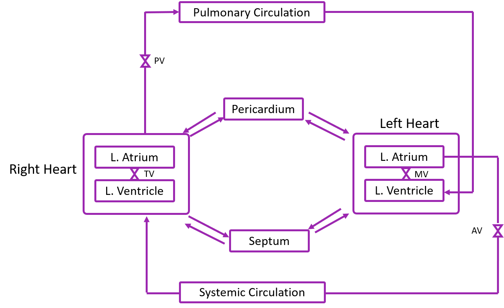

OVERVIEW
This module can be used to simulate multiple parameters of every individual section of the heart, and experience the use of software very similar to that of the catheterization laboratory.
LEARNING OBJECTIVES
1. Study the blood pressure, flow and volume waveforms
In multiple sections of the heart
2. Understand the heart waveforms by varying speed,
Scale and other parameters of the graph.
INTRODUCTION
Cardiac hemodynamics is the study of motion of blood inside the heart. The heart contains four chambers - left and right atria and the left and right ventricle. The left and right chambers do not meet each other, i.e. blood in the left side of the heart is isolated from that in the right side of the heart. The atria are connected to their corresponding ventricles via valves. Similarly, the arteries leaving the two ventricles also have valves.
In the heart the atria contract first, causing blood to enter the ventricles which then contract in order to force the blood into the arteries. The valves serve the purpose of preventing the backflow. It is thus of great clinical interest to measure the blood pressure in each of these chambers in order to assess the contractility of the cardiac muscles, the functioning of the valves, blockages in any of the arteries etc. Using the cardiac model , it is possible to conduct experiments where the model paramters can be altered to simulate a condition and then the blood pressure in the different chambers and blood vessels of the heart can be visualised, according to the model.
In the heart the atria contract first, causing blood to enter the ventricles which then contract in order to force the blood into the arteries. The valves serve the purpose of preventing the backflow. It is thus of great clinical interest to measure the blood pressure in each of these chambers in order to assess the contractility of the cardiac muscles, the functioning of the valves, blockages in any of the arteries etc. Using the cardiac model , it is possible to conduct experiments where the model paramters can be altered to simulate a condition and then the blood pressure in the different chambers and blood vessels of the heart can be visualised, according to the model.
SCHEMATIC DIAGRAM
MATHEMATICAL MODEL
The lumped parameter model of the human heart that has been used
by the software has been adapted from Sun et al. This heart model
includes component models of the atrium and ventricular mechanics,
cardiac valve mechanics, direct ventricular interaction through the
septum, systemic and pulmonary circulation, venous system and the
influence of the pericardium on heart pumping performance.
In the above model, there consists,
• Four cardiac chambers
• Four cardiac valves
• Systemic and pulmonary circulation
• Pericardium volume coupling
• Interventricular system pressure coupling
• Time-varying intrapleural pressure
CARDIAC REGULATION
Any aberrant changes in blood pressure would be automatically compensated by the body by changing other parameters such as heart rate, resistances and so on. Baroreflex is one such system that kicks in when there is any aberration detected. There are two baroreceptors located in the body, one in the carotid sinus and the other in the aortic arch. The baroreflex mechanism is a fast response to changes in blood pressure. Combining the models of Heldt[3] and Samar[4], and modifying the control loop we have arrived upon a negative feedback loop for the cardiovascular control system shown below.

The arterial baroreflex is described by the below diagram, where S(t) and P(t) represent the sympathetic
and parasympathetic filters, and the Gs and Gp are the sympathetic and parasympathetic gains for the effector variable.

The input to the model is the error signal which is the difference between the pressure at the aortic
arch and the set pressure which is 91 mmHg.
RESULTS
The pressure and volume simulations of the above model are as follows,
REFERENCES
Sun, Ying, Mazen Beshara, Richard J. Lucariello, and Salvatore A. hiaramida.
A comprehensive model for right-left heart interaction under the influence of
pericardium and baroreflex. Am. J. Physiol. 272 (Heart Circ. Physiol. 41):
H1499-H1515, 1997.
Avolio. A. P. (1980). Multi-branched model of the human arterial system.
Medical and Biological Engineering and Computing, 18(6), 709-718.
John, L. R. (2004). Forward electrical transmission line model of the human
arterial system. Medical and Biological Engineering and Computing, 42(3), 312-
321.
Hemalatha, K., Suganthi, L., & Manivannan, M. (2010). Hybrid
cardiopulmonary model for analysis of Valsalva maneuver with radial artery
pulse. Annals of biomedical engineering, 38(10), 3151-3161.
Z. Samar. Cardiovascular Parameter Estimation using a Computational Model.
SM thesis, Department of Electrical Engineering and Computer Science,
Massachusetts Institute of Technology, Cambridge, MA, May 2005
Suganthi, L., Manivannan, M., Kunwar, B. K.,Joseph, G., & Danda, D. (2015).
Morphological analysis of peripheral arterial signals in Takayasu’s arteritis.
Journal of clinical monitoring and computing, 29(1), 87-95